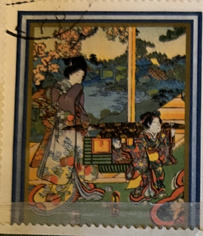
| SOURCE | TITLE| IMAGE MATCH | click to source page |
| tickets-amsterdam.com | Van Gogh Museum Collection | Paintings, Sketches, & More | 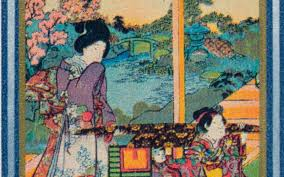 |
| Media Storehouse | Colour Woodblock Print of Scene from Genji Monogatari. Art Prints, Posters & Puzzles from Fine Art Finder | 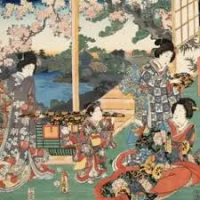 |
| 1stDibs | Utagawa Kunisada - Bijin and Children on a Porch with Lanterns-Woodcut by Utagawa Kunisada II-1870s For Sale at 1stDibs | kunisada artworks, kunisada iii, kunisada signature | 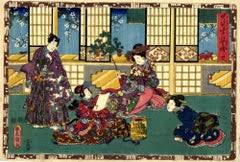 |
| eBay | Toyokuni III Japan Antique Woodblock samurai veranda kimono black hair triptych | eBay | 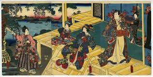 |
| domacirecepti.rs | Antique Satsuma Single-Handle Earthenware Rice Bucket Satsuma Meiji Period Vase | 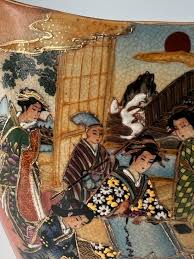 |
| OCLC | Sono sugata yukari no utsushie - b1206043_001 - Japanese Illustrated Books - Digital Collections from The Metropolitan Museum of Art Libraries | 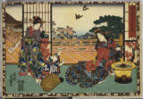 |
| Christie's | Utagawa Kunisada I (Toyokuni III) (1786-1864), THE COMPLETE SET OF THE SERIES MAGIC LANTERN SLIDES OF THAT ROMANTIC PURPLE FIGURE | Christie's | 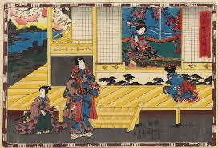 |
| Invaluable.com | Sold at Auction: Original Japanese Woodblock Print, | 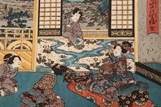 |
| Etsy | 6 Vintage A.M.V. Japan Hand Painted Porcelain 4.5 " Collectible Plates - Etsy | 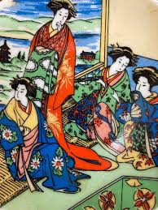 |
| 160 Japanese Art ideas | japanese art, japanese woodblock printing, japanese prints | 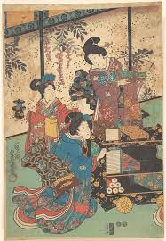 | |
| Kunisada.de | Utagawa Kunisada (Toyokuni III) Genji horizontal 1852 | 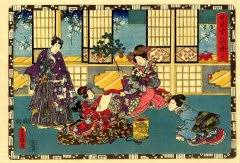 |
| Artelino | Kunisada - Tale of Genji | 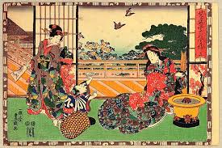 |
| St. Catherine University | Nostalgic Femininity: Japanese Woodblock Prints from the St. Catherine University Archives & Special Collections | St. Catherine University | 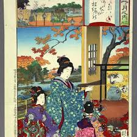 |
| Ruby Lane | Antique Japanese Woodblocks on Crepe. For Sale at Ruby Lane | 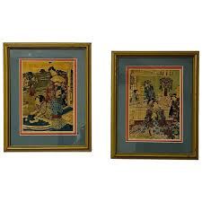 |
| LiveAuctioneers | Utagawa Kunisada, Japanese Woodblock Prints | 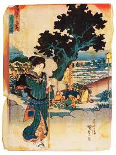 |
| World Auction Gallery | Lot - Lot of 3 Japanese Woodblock Prints | 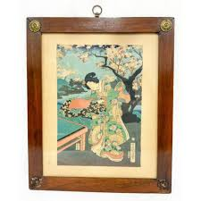 |
| Fuji Arts | Hiroshige (1797 - 1858) Fine Old Reprint Clearance! A Fuji Arts Value - Fuji Arts Japanese Prints | 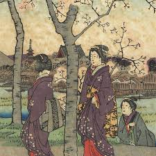 |
| Invaluable.com | Sold at Auction: Utagawa (1786) Kunisada, UTAGAWA TOYOKUNI (1786-1865) MAGIC LANTERN SLIDES | 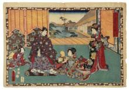 |
| beniehomefurnishings.com | KABUKI JAPANESE ART FROM TOKEYO JAPAN - 15 5/8" x 19 1/2" – Bénie Home Furnishings, Accessories & Gifts | 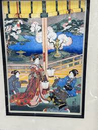 |
| wallector.com | Kabuki Scene by Utagawa Kunisada at wallector.com | 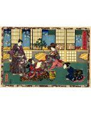 |
| eBay | art book HIROSHIGE FAN PRINTS by RUPERT FAULKNER 2001 Victoria & Albert Museum 9780810965768| eBay | 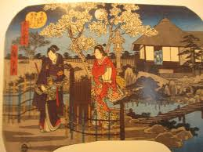 |
| eBay | Japanese Woodblock Print Hanami in Asakusa: Women holding hands by Toyokuni | eBay | 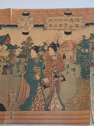 |
| 1stDibs | 1913 Huntley and Palmers Japanese Screen Form Biscuit Tin Box at 1stDibs | 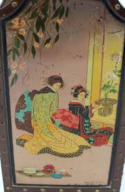 |
| eBay | JAPANESE WOMEN in TOWN LITHOGRAPHY BY TOYOKUNI KUNISADA Original Vintage | eBay | 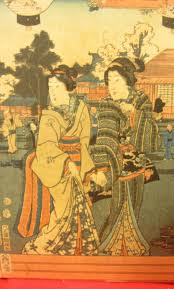 |
| Japanese Print Search and Database | Japanese Print "Musical Competition of Beauties (Kajin ongyoku kurabe)" by Watanabe Nobukazu | 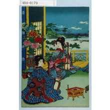 |
| Austintatious Offerings | Rare Veres Oriental Evening Crewel Embroidery Kit Contemporary Stitchery Crafts | 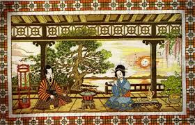 |
| eBay | antique chinese Satsuma vase. Marked . 30 cm H | eBay | 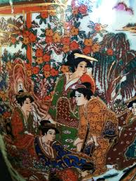 |
| crystal-wizard.com | Crystal Wizard Japanese Ukiyo-e Print 592, Japanese Ukiyo-e, 592 | 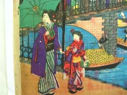 |
| Weebly | more light | 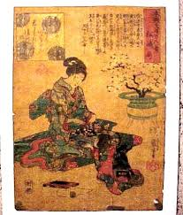 |
| Art Gallery of Greater Victoria | Yang dragon clutching pearls of Being & Consciousness with Yabum Sea displaying 'OM' symbol of Creation – Works – eMuseum | 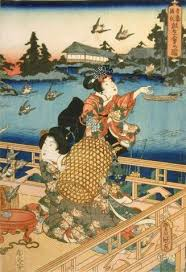 |
| MayaIncaAztec.com | Ancient Edo, Japan — MayaIncaAztec.com | 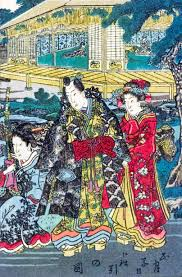 |
| Invaluable.com | Sold at Auction: Chinese School Reverse Painting on Glass 2 Women | 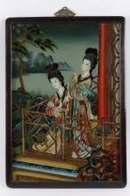 |
| HipPostcard | Ushiwakamaru Serenading Princess Jorurihime by Kiyonaga Ukiyo-e Art Postcard | Topics - Fine Arts - Other, Postcard / HipPostcard | 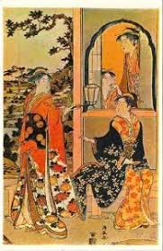 |
| Invaluable.com | Sold at Auction: Japanese Satsuma Plate | 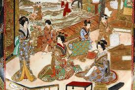 |
| NIHON KOSHO | Baiji shusen from the series Shogaku jorei shiki zukai by Adachi Ginko – NIHONKOSHO | 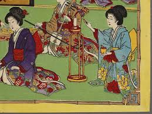 |
| eBay | UTAGAWA KUNISIDA TOYOKUNI III (JAPAN 1786-1865) 19TH C SGND TRIPTYCH W/B PRNTS | eBay | 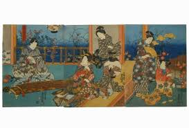 |
| eBay | Ukiyoe Japanese woodblock print Kuniteru Utagawa Four Seasons Winter (K00380) | eBay | 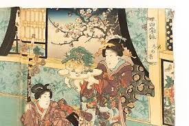 |
| antiquariat-kunsthandel.de | Utagawa Kunisada woodcuts, - Antiquariat und Kunsthandel Edith Neumann e.K. | 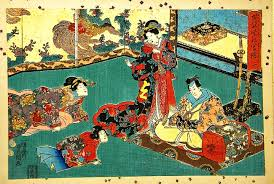 |
| Bonhams | Bonhams : UTAGAWA KUNIYOSHI (1797-1861), UTAGAWA KUNISADA I (TOYOKUNI III, 1786-1864), AND YOSHU CHIKANOBU (HASHIMOTO CHIKANOBU, 1838-1912) Edo period (1615-1868) or Meiji era (1868-1912), 1845-1895 | 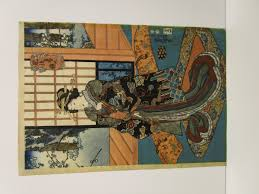 |
| Historic Pictoric | Utagawa Kunisada - Print - Japan v.105 – Historic Pictoric | 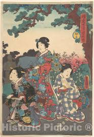 |
| Arthive | Kiss, 1925, 98×131 cm by Pablo Picasso: History, Analysis & Facts | Arthive | 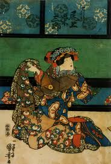 |
| Etsy | Buy Satsuma Moriage Plate Hand Painted Gilded Porcelain Geishas Garden Florals Vintage Decorative Dish 10" Marked Online in India - Etsy | 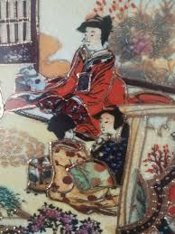 |
| Bonhams | Bonhams : UTAGAWA HIROSHIGE I (1826-1869) and UTAGAWA KUNISADA I (TOYOKUNI III, 1786-1864) Edo period (1615-1868), 1847-1861 | 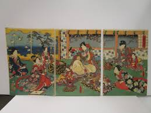 |
| eBay | Antique Original Japan Utagawa Kunisada (1786-1865) Large Antique Woodblock | eBay | 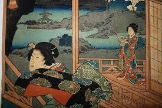 |
| Amazon.ca | Kuniyoshi: Design and Entertainment in Japanese Woodcuts : Kuniyoshi, Utagawa, Wieninger, Johannes, Wakita-Elis, Mio, Wieninger, Johannes, Wakita-Elis, Mio: Amazon.ca: Books | 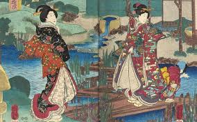 |
| Kashiwazaki Nenji aka Okina of the Oniwabanshu Source: Rurouni Kenshin: Meiji Kenkyaku Romance Masterpiece Collection Artbook | 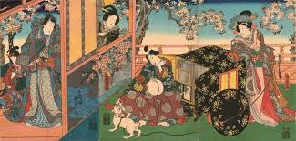 | |
| British Museum | triptych print | British Museum | 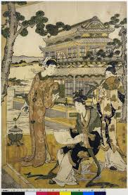 |
| Fuji Arts | Kunisada (1786 - 1864) Maboroshi, Chapter 41, 1851 - 1853 - Fuji Arts Japanese Prints | |
| Invaluable.com | Sold at Auction: ARTIST UNKNOWN (SIGNED D. KORMAN), THE GEISHA, ACRYLIC ON BOARD, SIGNED LOWER RIGHT, 44.5 X 34.5CM, FRAME SIZE: 58 X 47.5CM | 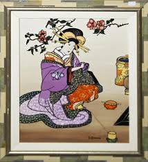 |
| Invaluable.com | Sold at Auction: Chinese mirror with painting "Tea house scene", late Qing Dynasty, China around 1900, 54x39cm | 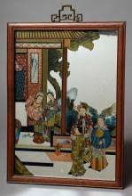 |
| ozbalaluminyum.com | Antique Japanese Art | |
| Etsy | Japanese Printable Pages for Junk Journals, Japanese Ephemera, Junk Journal Kit, Japanese Theme, Ancient Art, Old Art, Japanese Art, Geisha - Etsy | |
| AliExpress | Nostalgia Japanese Retro Poster Wall Poster Bar Decor Sticker Vintage Printed Poster Home Art - AliExpress 15 | |
| Mokuhankan | Mokuhankan Flea Market : | |
| Chairish | Utagawa Kunisada (Toyokuni III), Genjie, Woodcut, 1852 | Chairish | |
| MeisterDrucke - Art Prints, Paintings & Reproductions | Genji Viewing Snow from a Balcony by Toyohara Kunichika | |
| Ukiyo-e Search | Japanese Print "January" by Watanabe Nobukazu | |
| 1stDibs | Strepitoso Vaso Giapponese in porcellana, XX secolo at 1stDibs | |
| MutualArt | Utagawa Kunisada | Kunisada Utagawa Japanese Woodblock Print | MutualArt | |
| 國立清華大學 | T SIN G HU A UNIVE RSIT Y |